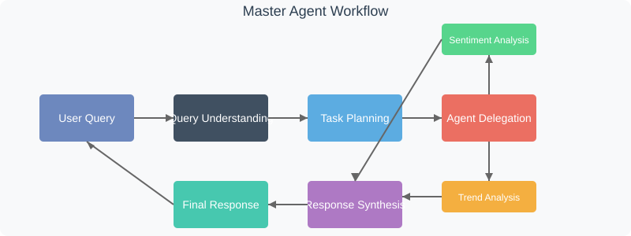

Chapter 2: Master Agent (Orchestrator)
Welcome back to the EggHatch AI tutorial! In the last chapter, User Interface (Dashboard), we saw how you, the user, interact with EggHatch AI – typing questions into the Dashboard and seeing the answers appear. The User Interface is like the friendly front door.
But once you've handed your question through that front door, where does it go? And who figures out what to do with it? That's the job of the Master Agent, also known as the Orchestrator.
What is the Master Agent?
Think of the Master Agent as the brain or the project manager of EggHatch AI. When a question comes in from the User Interface, the Master Agent takes charge. It's responsible for:
- Understanding exactly what you're asking.
- Figuring out the best plan to answer your question.
- Sending different parts of the problem to the right specialist agents (like an agent that knows about trends or one that analyzes feelings).
- Making sure those specialist agents do their jobs in the correct order.
- Taking all the results from the specialists and combining them into one helpful final answer.
- Sending that final answer back to the User Interface to show you.
Think of it like this: If EggHatch AI were a restaurant, the User Interface would be the waiter taking your order, and the Master Agent would be the head chef who reads the order, decides which cooks should prepare which parts of the meal, and makes sure everything comes together on your plate at the right time.
How Does the Master Agent Work?
The Master Agent is built using a combination of techniques, but its core functionality relies on a Large Language Model (LLM) to understand and process natural language. Let's look at a simplified version of how it works:

The Master Agent's Key Functions
Query Understanding
Interprets what the user is asking for and identifies the intent
Task Planning
Breaks down complex queries into manageable sub-tasks
Agent Delegation
Assigns sub-tasks to specialized agents with the right capabilities
State Management
Keeps track of the conversation context and progress of tasks
The Master Agent Implementation
Let's look at a simplified version of the Master Agent's code to understand how it works:
class MasterAgent:
def __init__(self):
# Initialize connections to specialized agents
self.llm_client = LLMClient()
self.trend_analysis_agent = TrendAnalysisAgent()
self.sentiment_analysis_agent = SentimentAnalysisAgent()
self.product_knowledge_agent = ProductKnowledgeAgent()
self.pricing_availability_agent = PricingAvailabilityAgent()
self.build_recommendation_agent = BuildRecommendationAgent()
# Initialize state management
self.state = AgentState()
# Load prompt templates
self.prompts = Prompts()
def process_query(self, user_query):
"""Main entry point for processing user queries"""
# Update conversation state
self.state.add_user_message(user_query)
# Understand the query using LLM
query_analysis = self.llm_client.analyze_query(
self.prompts.get_prompt("query_understanding"),
user_query
)
# Plan the response strategy
plan = self._create_plan(query_analysis)
# Execute the plan by calling appropriate agents
results = self._execute_plan(plan)
# Synthesize the final response
final_response = self._synthesize_response(results, query_analysis)
# Update state with response
self.state.add_agent_message(final_response)
return final_response
This simplified code shows how the Master Agent orchestrates the entire process, from receiving a query to returning a final response.
Key Design Principles
The Master Agent follows several important design principles:
Modularity
Uses specialized agents that can be improved independently
Stateful
Maintains conversation context for more natural interactions
Extensibility
New capabilities can be added by creating new specialized agents
Robustness
Can handle unexpected inputs and agent failures gracefully
Next Steps
Now that you understand the Master Agent's role as the orchestrator of EggHatch AI, let's move on to Chapter 3: LLM Client, where we'll explore how EggHatch AI leverages Large Language Models to understand and generate human-like text.